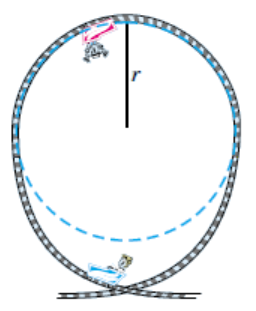

This equation is called a radical equation, because an unknown value, \(h\text{,}\) appears under a radical sign.
Radical Equation.
A radical equation is one in which the variable appears under a radical.
Example9.75.
If you drop a penny from the top of the Sears Tower in Chicago, it will take \(9.5\) seconds to reach the ground. Find the height of the Sears Tower in meters by solving the equation
To solve the equation, we undo the operations performed on \(h\text{.}\) To undo the operation of taking a square root, we can square both sides of the equation. Remember that we undo the operations in the opposite order, as follows.
Operations performed on \(h\)
\(\hphantom{0000}\)
Steps for solution
1. Divide by 4.9
\(\hphantom{0000}\)
1. Square both sides
2. Take square root
\(\hphantom{0000}\)
2. Multiply by 4.9
Here is the solution.
\begin{align*}
9.5^2 \amp = \left(\sqrt{\dfrac{h}{4.9}}\right)^2 \amp \amp \blert{\text{Square both sides of the equation.}}\\
90.25 \amp = \dfrac{h}{4.9} \amp \amp \blert{\text{Multiply both sides by 4.9.}}\\
442.225 \amp = h
\end{align*}
The Sears Tower is about \(442\) meters tall.
To Solve a Radical Equation.
Isolate the radical on one side of the equation.
Square both sides of the equation.
Continue as usual to solve for the variable.
QuickCheck9.76.
What is a radical equation?
Answer.
One in which the variable appears under a radical.
Example9.77.
Solve the radical equation \(~~\sqrt{x-3} = 4\)
Solution.
We square both sides of the equation to produce an equation without radicals.
You can check that \(x=19\) satisfies the original equation.
SubsectionExtraneous Solutions
The technique of squaring both sides may introduce extraneous solutions. (Recall that an extraneous solution is a value that is not a solution to the original equation.) For example, consider the equation
Thus, \(x=2\) is an extraneous solution. The only solution to the original equation is \(x=4\text{.}\)
Caution9.80.
When squaring both sides of an equation, we must be careful to square the entire expression on either side of the equal sign. It is incorrect to square each term separately. Thus, in Example9.79, it would not be correct to write
Finally, we add 4 to both sides to find the solution, \(x=31\text{.}\) We do not have to check for extraneous solutions when we cube both sides of an equation, but it is a good idea to check the solution for accuracy anyway.
\(\blert{\text{Check:}}\) Substitute \(\alert{31}\) for \(x\) into the left side of the equation.
How can we solve an equation if the variable appears under a cube root?
Answer.
Isolate the cube root, then cube both sides.
SubsectionExtraction of Roots
Now well compare solving radical equations, where we square both sides, with quadratic equations, where we may be able to take square roots of both sides.
Example9.84.
Solve by extraction of roots \(~~2(3x-1)^2 = 36\)
Solution.
We first isolate the squared expression: we divide both sides by 2.
We write the solutions as \(~\dfrac{1 \pm 3\sqrt{2}}{2}\text{.}\)
QuickCheck9.85.
Is it true that \(~1+3\sqrt{2} = 4\sqrt{2}~\text{?}\) Why or why not?
Answer.
No. \(1\) and \(3\sqrt{2}\) are not like terms.
Skills Warm-Up9.86.
Square each expression.
\(\displaystyle 3x\)
\(\displaystyle 3+x\)
\(\displaystyle \sqrt{3x}\)
\(\displaystyle 3\sqrt{x}\)
\(\displaystyle \sqrt{x+3}\)
\(\displaystyle \sqrt{x}+\sqrt{3}\)
\(\displaystyle x-\sqrt{3}\)
\(\displaystyle 3-\sqrt{x}\)
\(\displaystyle 2-3\sqrt{x}\)
\(\displaystyle 2\sqrt{2x-3}\)
\(\displaystyle 2+\sqrt{x-3}\)
\(\displaystyle 3+2\sqrt{x-3}\)
Answer.
\(\displaystyle 9x^2\)
\(\displaystyle 9+6x+x^2\)
\(\displaystyle 3x\)
\(\displaystyle 9x\)
\(\displaystyle x+3\)
\(\displaystyle x+2\sqrt{3x}+3\)
\(\displaystyle x^2-2\sqrt{3}x+3\)
\(\displaystyle 9-6\sqrt{x}+x\)
\(\displaystyle 4-12\sqrt{x}+9x\)
\(\displaystyle 8x-24\)
\(\displaystyle x=1+4\sqrt{x-3}\)
\(\displaystyle 4x-3+12\sqrt{x-3}\)
SubsectionLesson
Activity9.16.Solving Radical Equations.
After solving a radical equation, remember to check for extraneous solutions.
Solve \(~\sqrt{x-6}=2\)
Solve \(~\sqrt{x-3}+5=x\)
Solve \(~3\sqrt[3]{4x-1}=-15\)
Activity9.17.Roller Coasters.
You have been commissioned to design a new roller coaster for an amusement park. The roller coaster should be more spectacular than all existing roller coasters, and in particular it should include a vertical loop. In order to stay on the track through the loop, the cars must travel at a speed given (in miles per hour) by
\begin{equation*}
v=\sqrt{89.3r}
\end{equation*}
where \(r\) is the radius of the loop in feet.
Here are three roller coasters with ver tall vertical loops:
Height
Roller Coaster
Location
188 feet
Viper
Six Flags Magic Mountain, Valencia, California
173 feet
Gash
Six Flags Great Adventure, Jackson, New Jersey
170 feet
Shockwave
Six Flags Great Adventure, Gurnee, Illinois
Evaluate the formula to find the speed the cars must reach on each roller coaster. Because the vertical loops used in roller coasters are not perfect circles, the total height of the loop is about 2.5 times its radius.
Viper:
Gash:
Shockwave:

You would like your roller coaster to have a vertical loop that is 200 feet tall. How fast must the cars travel?
Now suppose you know the maximum speed possible for the cars on a particular roller coaster. Can you calculate the height of the tallest vertical loop the cars can negotiate? Here are the speeds of three of the worlds fastest roller coasters.
Speed
Roller Coaster
Location
86 mph
Fujiyama
Fujikyu Highland Park, Japan
80 mph
Steel Phantom
Kennywood, West Miflin, Pennsylvania
79 mph
Desperado
Buffalo Bills, Jean, Nevada
Calculate the maximum loop height possible for each roller coaster.
Desperado:
Steel Phantom:
Fujiyama:
Activity9.18.Quadratic Equations.
Solve \(~~(2x+1)^2=8\)
Solve \(~~3x^2-6x+2=0~~\) and simplify the solutions.
SubsubsectionWrap-Up
Objectives.
In this Lesson we practiced the following skills:
Solving radical equations
Checking for extraneous solutions
Simplifying solutions of quadratic equations
Questions.
What operation might introduce extraneous solutions?
What is wrong with this strategy: To solve an equation with a variable under a square root, square each term of the equation.
How many solutions does the equation \(~x^2=64~\) have? How many solutions does \(~x^3=-64~\) have?
Activity9.19.Homework Preview.
Solve \(~~5\sqrt{2x-4}-7=23\)
Solve \(~~4\sqrt[3]{6-x}+5=-3\)
Solve, and check for extraneous solutions. \(~~\sqrt{2x-3}=-5\)
Solve, and check for extraneous solutions. \(~~t-5=\sqrt{2t+5}\)
Solve by extracting roots \(~~3(2x-3)^2=15\)
Solve \(~~2x^2-4x-5=0~~\) and simplify your answer.
Answers to Homework Preview
\(\displaystyle x=20\)
\(\displaystyle x=14\)
No solution
\(\displaystyle t=10\)
\(\displaystyle x=\dfrac{3 \pm \sqrt{5}}{2}\)
\(\displaystyle x=\dfrac{2 \pm \sqrt{14}}{2}\)
ExercisesHomework 9.5
Exercise Group.
For Problems 15, solve and check.
1.
\(\sqrt{x+4}=5\)
2.
\(\sqrt{x}-4=5\)
3.
\(6-\sqrt{x}=8\)
4.
\(2+3\sqrt{x-1}=8\)
5.
\(2\sqrt{3x+1}-3=5\)
6.
Use the graph of \(y=\sqrt{x}\) shown below to solve the equations. (You may have to estimate some of the solutions.) Check your answers algebraically.
\(\displaystyle \sqrt{x} = 4\)
\(\displaystyle \sqrt{x} = 2.5\)
\(\displaystyle \sqrt{x} = -2\)
\(\displaystyle \sqrt{x} = 5.3\)
7.
The equation for the semicircle shown is
\begin{equation*}
y=\sqrt{9-x^2}
\end{equation*}
Find the \(x\)-coordinates of two different points on the semicircle that have \(y\)-coordinate 2.
Exercise Group.
For Problems 812, solve, and check for extraneous solutions.
8.
\(\sqrt{x}=3-2x\)
9.
\(\sqrt{x+4}+2=x\)
10.
\(x+\sqrt{2x+7}=-2\)
11.
\(\sqrt{x+7}=2x-4\)
12.
\(6+\sqrt{5x-4}-x=4\)
Exercise Group.
For Problems 1315, solve.
13.
\(2\sqrt[3]{x}+15=5\)
14.
\(\sqrt[3]{2x-5}-1=2\)
15.
\(2=8-3\sqrt[3]{x^3+1}\)
Exercise Group.
For Problems 1618, solve by extraction of roots, and simplify your answer.
16.
\((2x+1)^2=8\)
17.
\(3(2x-8)^2=60\)
18.
\(\dfrac{4}{3}(x+3)^2=24\)
Exercise Group.
For Problems 1920, solve the formula for the indicated variable.
19.
\(x^2+a^2=b^2~~~~\) for \(x\)
20.
\(\dfrac{x^2}{4}-y^2=1~~~~\) for \(x\)
21.
Complete the table of values and graph \(y=\sqrt{x-4}\text{.}\)
\(x\)
\(y\)
\(4\)
\(\hphantom{0000}\)
\(5\)
\(\hphantom{0000}\)
\(6\)
\(\hphantom{0000}\)
\(10\)
\(\hphantom{0000}\)
\(16\)
\(\hphantom{0000}\)
\(19\)
\(\hphantom{0000}\)
\(24\)
\(\hphantom{0000}\)
Solve \(~\sqrt{x-4}=3~\) graphically and algebraically. Do your answers agree?
22.
Complete the table of values and graph \(y=4-\sqrt{x+3}\text{.}\)
\(x\)
\(y\)
\(-3\)
\(\hphantom{0000}\)
\(-2\)
\(\hphantom{0000}\)
\(1\)
\(\hphantom{0000}\)
\(6\)
\(\hphantom{0000}\)
\(13\)
\(\hphantom{0000}\)
Solve \(~4-\sqrt{x+3}=1~\) graphically and algebraically. Do your answers agree?
23.
The higher your altitude, the farther you can see to the horizon, if nothing blocks your line of sight. From a height of \(h\) meters, the distance \(d\) to the horizon in kilometers is given by
\begin{equation*}
d=\sqrt{12h}
\end{equation*}
Mt. Wilson is part of the San Gabriel mountains north of Los Angeles, and it has an elevation of 1740 meters. How far can you see from Mt. Wilson?
The new Getty Center is built on the hills above Sunset Boulevard in Los Angeles, and from the patio on a clear day you can see the city of Long Beach, 44 kilometers away. What does this tell you about the elevation at the Getty Center?
24.
The speed of a tsunami is given, in miles per hour, by
\begin{equation*}
s=3.9\sqrt{d}
\end{equation*}
where \(d\) is the depth of the ocean beneath the wave, in feet. A tsunami traveling along the Aleutian Trench off the coast of Alaska is moving at a speed of over 615 miles per hour. Find the depth of Aleutian Trench.
25.
The height of a cylindrical storage tank is four times its radius. If the tank holds \(V\) cubic inches of liquid, its radius in inches is